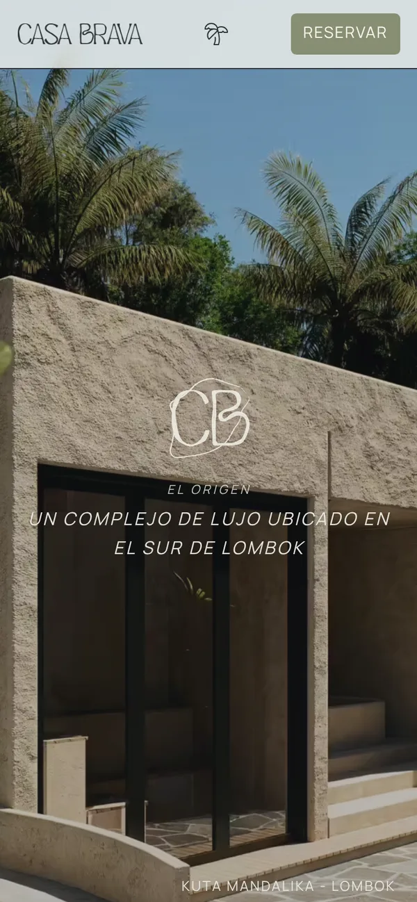

Casa Brava
Eine Website im Magazin-Stil für eine Anlage mit Villen und Suiten in Kuta Mandalika auf Lombok. Sie liest sich eher wie ein Architekturmagazin als wie ein Buchungsportal; gebucht wird per E-Mail, Telefon oder WhatsApp.

- 01 Meine Rolle
- Konzeption, Design und Entwicklung aus einer Hand: Struktur, Interface-Texte, Layout und Code.
- 02 Die Herausforderung
- Die Ruhe und Exklusivität einer Villenanlage auf Lombok vermitteln, ohne dass die Website wie ein Buchungskatalog wirkt – und das auch mobil mit kurzen Ladezeiten.
- 03 Was ich gemacht habe
- Ein fünfseitiges Editorial-Design mit semantischem HTML, nach SUIT strukturiertem CSS, GSAP-Animationen, die nie Inhalte verbergen, und Direktbuchung per E-Mail, Telefon oder WhatsApp.
- 04 Das Ergebnis
- Eine veröffentlichte, barrierefreie (WCAG AA) Mobile-first-Website – zugleich Kundenauftrag und Masterprojekt.
Highlights
- 5 Seiten mit semantischem HTML5, CSS3 und Vanilla-JavaScript
- WCAG AA Barrierefreiheit, dazu technisches SEO und optimierte Ladezeiten
- Mobile first mit einer sauberen, skalierbaren CSS-Architektur (SUIT CSS)
- GSAP Scroll-Animationen, die keine Inhalte verbergen – auch wenn das Skript nicht lädt
Umgesetzt mit HTML5 · CSS3 · JavaScript · SUIT CSS · GSAP · GitHub Pages